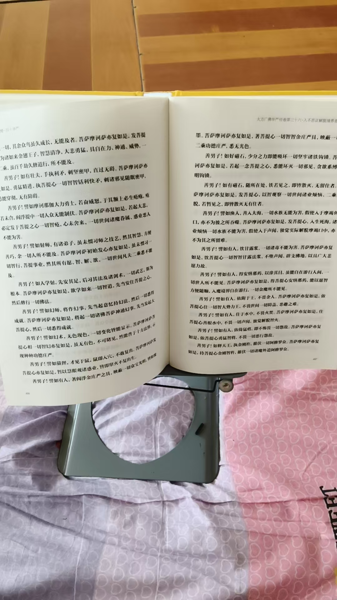

20260825今天法事三场，把给我烧元宝的老两口累趴了
符咒术法 原始对话记录
快了快了，还有不到四十页
引人入胜
看完就整理记录
翻看了一下，竟然跟书上截然不同
全是实修细节
可能就是说的链接高维
读经，读着读着，就跟人聊天去了，也不知道是谁
没问名字
解答比经里更细节
[呲牙][呲牙][呲牙]，今天法事三场，把给我烧元宝的老两口累趴了
不过，摆的很用心，懂行
是我小楼的邻居，开个佛店，有元宝机，没生意，
我以前让另一个批发商烧，那个做的更大
这老两口会做人，送酒送油，请吃饭
就把这业务让他们做了
一个月给我烧元宝物件，也烧小两万的
这样，节省了我的时间
我就在家里供供灯，供水果，
邻村大神，
也不算大神，会摆供，没什么能力
他的孙子，跟外孙女都落榜了
临近师父都能借光[强]
气病了
这就是能力问题，高中考大学
都没考上，这样，以后求学，百姓就不会让她祈福了
自己的孩子都考不上，
没实力，让人笑话
我保的一个，抽烟打牌，几次被学校开除，就在实验中学
竟然考了五百一十多分
他爸妈都说神了
以下为编者整理的主题文章
编者整理 · 主题文章
法事三场与烧元宝：一份供品置办的工作记录
一句话结论：本页记录一天做了三场法事、请邻居老两口帮忙烧元宝，也谈到把烧元宝的活儿交给谁做、以及一些供品与"能力"的闲谈。它更像一份后台事务记录，反映民俗法事中供品置办这一环。
一、本页是什么
原页是一段工作间隙的闲聊：当事人说"今天法事三场，把给我烧元宝的老两口累趴了"。围绕这句，记录交代了烧元宝这桩"外包业务"的来龙去脉，也夹了几句对供品与"能力"的评论。因原页以第一人称叙述、夹带图片，这里按事务记录来整理。
二、谁来"烧元宝"
据记录，替他烧元宝的是"小楼的邻居"，开佛店、有元宝机、"没生意"；此前是让"另一个批发商"烧。选这家的原因很实在——"这老两口会做人，送酒送油，请吃饭"，于是"一个月给我烧元宝物件，也烧小两万的"。
这反映出一个民俗侧面：大型法事背后，有专门的供品置办与代烧环节，并非事事亲为。
三、当事人的分工
记录说，把烧元宝交出去后，形成一套简单分工：
- 代烧方：负责元宝、纸品的置办与焚化；
- 主事者：负责供灯、供果与仪轨主持。
如此便"节省了我的时间"。记录还提到"摆的很用心，懂行"——可见除元宝数量外，摆放是否得法也是选择代烧方的标准之一。
四、几句旁评
原文后半段转而评论另一位"邻村大神"——"会摆供，没什么能力"，并提到其孙辈考试落榜、"以后求学，百姓就不会让她祈福了"；接着又说自己保的一名学生"抽烟打牌、几次被开除，竟然考了五百一十多分，他爸妈都说神了"。
编者按：这是当事人的见闻与评论，属个人叙述，不能据此推断关联或因果。升学结果由多种因素决定，与法事无必然联系。
五、常见问题
问：烧元宝是什么？ 民间法事、祭祖中焚化元宝（纸钱的一种）以"送往"的说法。属民俗用品与仪式环节。
问：为什么找人代烧？ 如本页所示，量大时由有元宝机、懂摆放者代做，属实务分工，与信仰效力无关。
问：本页是不是在推荐做这类业务？ 不是。编者仅转述记录，本站不做商业推荐，也不承诺任何功效。
六、提醒
- 本页是后台事务记录，非教程；
- 焚化纸品请遵守当地规定、注意防火；
- 考试、升学请依靠教育规律与自身努力，勿信"包中"之说。
说明与免责：本站为民间修炼、民俗文化与传统文化资料的整理与记录，内容源自传承者口传与个人修习体会，仅供文化交流与研究参考，不构成医疗、健康、投资或任何功效承诺。所述内容属传统术数范畴，请理性看待；如身体不适，请及时就医。请遵守法律法规与公序良俗。